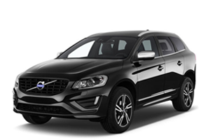
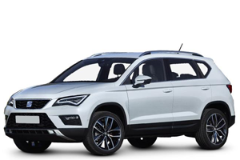
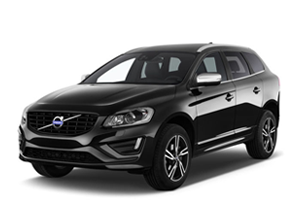
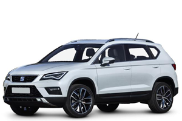

Skoda Kodiaq
BMW X5 
Audi Q5

Hyundai Tuscon

Honda CR-V

Porshe Cayanne

Volvo XC60
Mercedes GLE

Seat Ateca
Nissan Qashqai

Tork (Nm)/Tork devir (devir/dak)
Uzun./Geniş. / Yük. (mm)
Skoda Kodiaq |
BMW X5 |
Audi Q5 |
Hyundai Tuscon |
Honda CR-V |
Porshe Cayanne |
Volvo XC60 |
Mercedes GLE |
Seat Ateca |
Nissan Qashqai |
|
|---|---|---|---|---|---|---|---|---|---|---|
| Motor | 1.4 TSI 125 PS Green Tec | Dynamic 2.0 TDI quattro 140(190) kW(hp) S tronic | 1.6 GDI | 4 silindir DOHC i-DTEC | PORSHE CAYANNE | 1.6 TDI 115 hp S&S Ecomotive | 1.2 DIG-T 115HP DÜZ VİTES | |||
| Motor Gücü | 92 (125) / 5000-6000 | 231 hp | 140 (190)/3800-4200 hp/dd | 132 / 6.300 | 120 hp | 262 hp | 181 hp | 190/3400 | 115 hp | 115 hp |
| Motor Torku Tork (Nm)/Tork devir (devir/dak) |
200 / 1.400 - 4000 | 500/2000-3000 | 400/1750 - 3000 Nm/dd | 160,8 / 4.850 | 179 @ 2000-5000 | 580 nm | 400 nm | 620/1.600 | 250 nm | 190 nm |
| Silindir Hacmi | 1395 | 1995 | 1968 | 1.591 | 1597 | 2967 | 1969 | 2987 | 1598 | 1197 |
| Şehir içi | 7,5 lt/100 km | 6,2 lt/100 km | 5,6–5,3 l/100 km | 8,6 lt/100 km | 4,8 lt/100 km | 7,6 lt/100 km | 5,3 lt/100 km | 8,0–7,5 lt/100 km | 4,7 lt/100 km | 6,9 lt/100 km |
| Şehir dışı | 5,3 lt/100 km | 5,2 lt/100 km | 5,1–4,7 l/100 km | 5,6 lt/100 km | 4.3 lt/100 km | 6.0 lt/100 km | 4.4 lt/100 km | 6.7–6.4 lt/100 km | 4.1 lt/100 km | 4,9 lt/100 km |
| Ortalama Yakıt Tüketimi | 6,1 lt/100 km | 4,5 lt/100 km | 5,3–4,9 l/100 km | 6,7 lt/100 km | 4,5 lt/100 km | 6,6 lt/100 km | 4,7 lt/100 km | 7,2–6,9 lt/100 km | 4,3 lt/100 km | 5,6 lt/100 km |
| Maksimum hız | 190 km/sa | 220 km/sa | 218 km/sa | 182 km/sa | 182 km/sa | 221 km/sa | 210 km/sa | 226 km/sa | 184 km/sa | 185 km/sa |
| 0-100 km/sa hızlanma | 10,5 saniye | 7,7 saniye | 7,9 saniye | 11,5 saniye | 11.2 saniye | 7.3 saniye | 8.5 saniye | 7.0 saniye | 11.5 saniye | 10.9 saniye |
| CO2 emisyonu | 139 g/km | 146 g/km | 138–129 g/km | 156 g/km | 119 g/km | 173 g/km | 124 g/km | 189–180 g//km | 113 g/km | 129 g/km |
| Boyutları Uzun./Geniş. / Yük. (mm) |
4.697mm / 1.882mm / 1.676mm | 4886mm / 1938mm / 1762mm | 4629mm / 1880mm / 1653 mm | 4.475mm / 1.850mm / 1.660mm | 4570 mm / 2095 mm / 1685 mm | 4855 mm / 1939 mm / 1705 mm / | 4644 mm / 1891 mm / 1713 mm | 4900 mm / 2129 mm / 1700 mm | 4363 mm / 1841 mm / 1615 mm | 4377 mm / 1806 mm / 1590 mm |